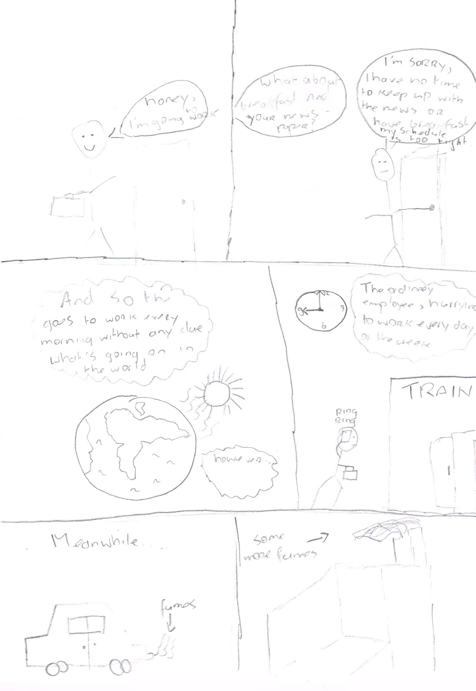
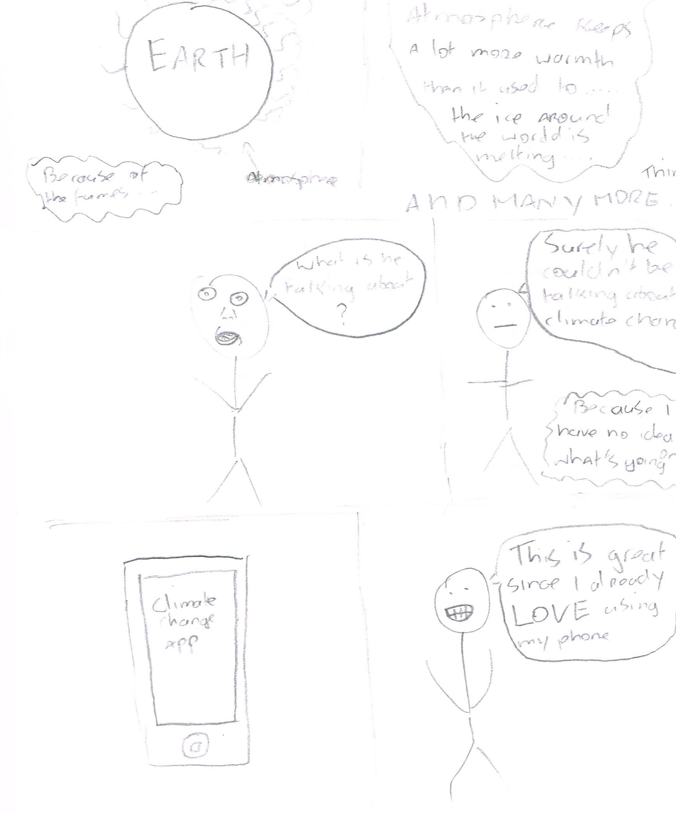
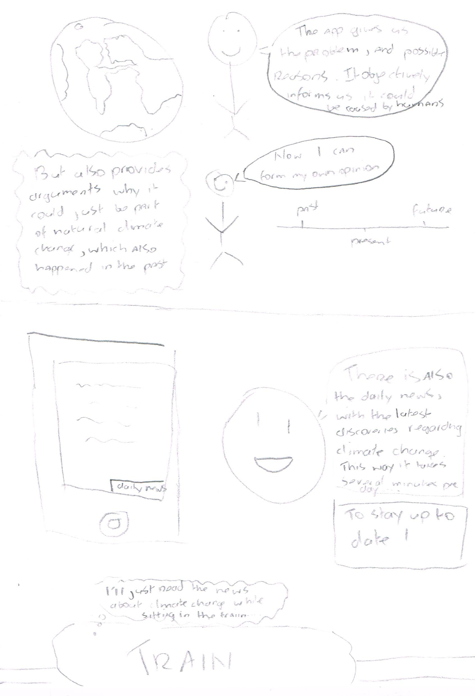

| De gekozen mini-opdracht als rode draad: De gewone man op de straat snapt niets van het probleem van klimaatverandering. Wie moeten ze vertrouwen als ze steeds verschillende en tegenstrijdige geluiden horen? Bedenk een oplossing die, zonder een kant te kiezen, een leek met weinig tijd in staat stelt een ge-informeerde mening te vormen. |
| Deliverable week 1: de strip |
|  |
|  |
|  |